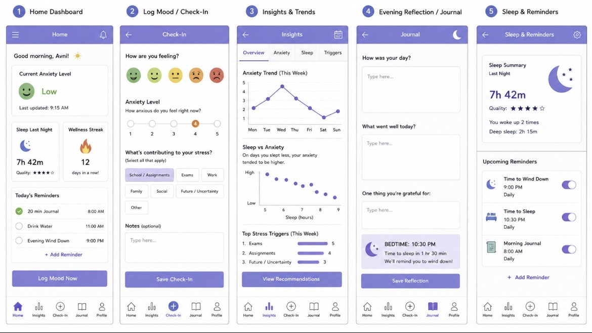
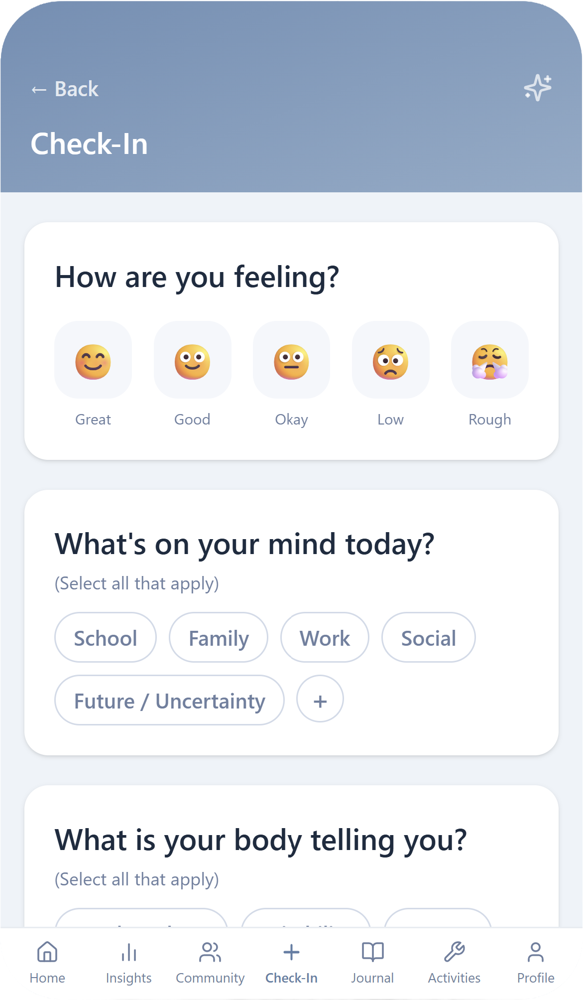
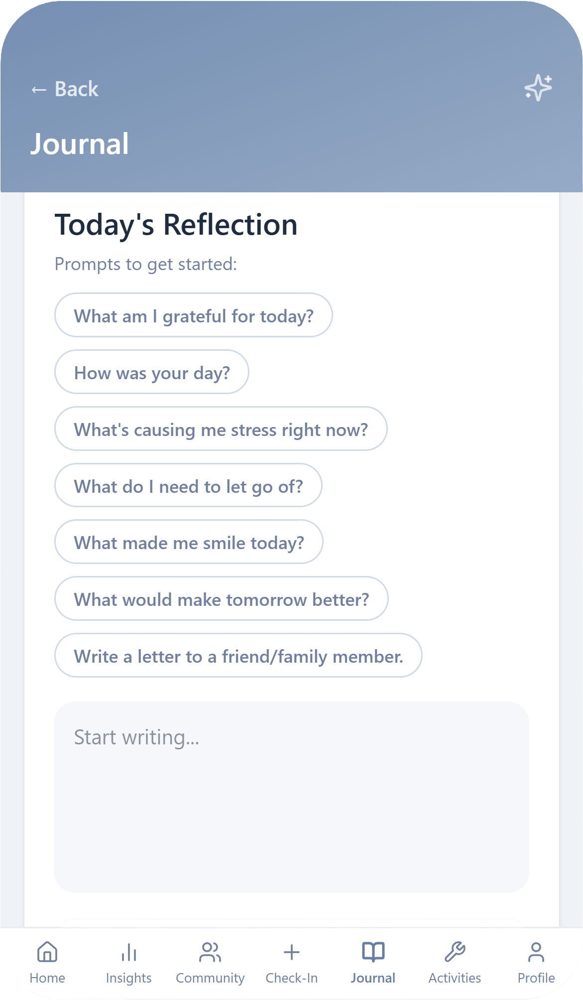
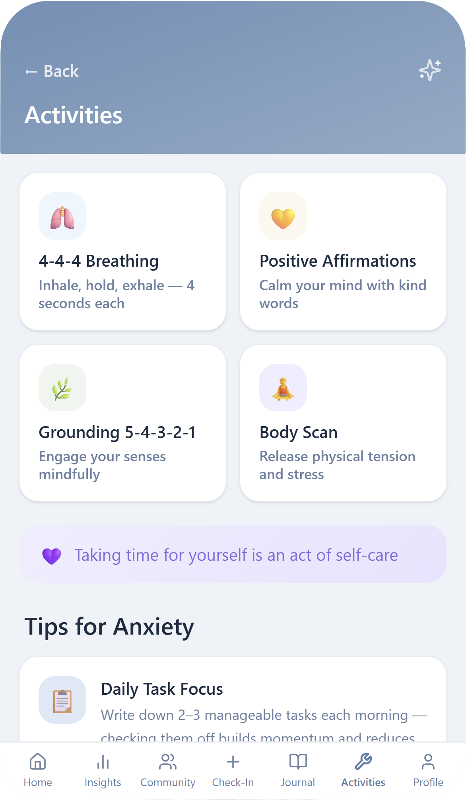

Solace
A research-driven mobile wellness experience designed to help young adults understand emotional patterns, reflect consistently, and access practical support.
Open live prototypeOverview
Solace was developed as a group project exploring how anxiety, sleep habits, and stress-management practices shape the daily mental wellness of young adults. Rather than isolating a single wellness feature, the product brings mood tracking, sleep awareness, guided reflection, personalized insights, community support, and coping activities into one cohesive experience.
The design prioritizes privacy and low-friction daily use. Anonymous participation, clear data visualizations, large touch targets, and a persistent mobile navigation system help users engage with sensitive wellness information in a comfortable and approachable way.
What I did
Research and design
Our team conducted semi-structured interviews with college students and recent graduates to understand recurring stressors, coping strategies, barriers to support, and expectations for mental wellness technology. We analyzed the interviews for shared themes, including academic pressure, future uncertainty, mental-health stigma, inconsistent sleep, social comparison, and demand for personalized reflection tools.
I took a leading role in translating the research into the product’s interaction architecture and visual direction. I synthesized user needs into feature requirements, created the initial multi-screen prototype, and drove the interface from early wireframes through the final mobile-first experience in Figma. My work established the core navigation, screen hierarchy, daily check-in flow, reflection experience, and visual system used across the prototype.
Product design
I designed the primary user flows and a substantial portion of the final interface, focusing on quick daily engagement without overwhelming the user. The home dashboard surfaces mood, sleep, streaks, and reflection prompts at a glance, while the check-in flow captures emotional state, current concerns, physical signals, notes, and sleep quality.
I also developed the journal and activities experiences, including guided reflection prompts and structured breathing, grounding, affirmation, and body-scan exercises. Across the product, I applied a consistent hierarchy, calming visual language, predictable navigation, and accessible mobile interaction patterns.
Design evolution
I created an early multi-screen prototype to establish the product’s information architecture and test the relationship between check-ins, insights, journaling, and sleep support. As our team gathered feedback, I refined the navigation, simplified dense screens, increased touch-target sizes, strengthened visual hierarchy, and expanded the experience to include community and guided wellness activities.




